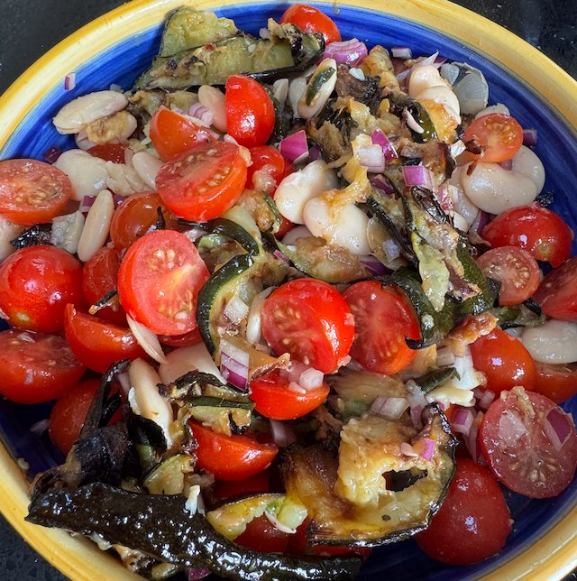

Butter Bean and Tomato Salad

Serves: 4
Cook Time: 45 min
Ingredients
- 2 courgettes, sliced lengthwise
- 1 400g tin butter bean, drained and rinsed
- 250g cherry tomatoes, halved and salted
- 1 red onion, chopped fine
- Dressing
- 1 lemon, juice
- 3 tbsp olive oil
- 1 tsp ground cumin
Method
Courgettes. Heat oven to 180°C fan. Add courgettes to a tray, salt, olive oil and mix. Cremate in oven for 40 min. Flip after 20 min.
Salad. Prepare rest of salad ingredients, and mix in a bowl.
Dressing. Whisk together the dressing ingredients.
Assemble. When the courgettes are cooked, remove from oven and allow to cool a bit. Then mix with other salad ingredients and mix in the dressing. Taste for salt.